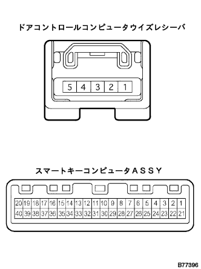

ワイヤレスドアロツクコントロールシステム ワイヤレス機能(遠隔操作)のみ作動しない(新品または正常品のトランスミツタを準備する)[スマートドアロック付き車] |

| 手順1 | 基本機能点検 |
ワイヤレス基本機能点検(要領は参照)
|
| ||||
| NG | |
| 手順2 | トランスミッタ バッテリ点検 |
トランスミツタバツテリを新品または正常品に交換し、エレクトリカルキートランスミツタ(スマート携帯機)のスイツチを押したとき、ロック、アンロック作動するか点検する。
ドアコントロールトランスミツタバツテリを新品または正常品に交換し、ドアコントロールトランスミッタのスイッチを3回押したとき、トランスミッタのLEDが3回点灯するかを点検する。
|
| ||||
| NG | |
| 手順3 | 自己診断モード入力 |
キープレートをイグニツシヨンスイツチロツクシリンダに差し込んだのち抜き取り、5秒以内に再びキープレートを差し込み、イグニツシヨンスイツチのON←→LOCK操作を1回行う。
イグニツシヨンスイツチOFF後、30秒以内に再度イグニツシヨンスイツチのON←→LOCK操作を9回行う。
 |
自己診断モードに移行したことを、ルームランプ(ドームランプまたはキー照明)の点滅により確認する。
|
| ||||
| OK | |
| 手順4 | 自己診断モードによる確認 |
エレクトリカルキートランスミツタ(スマート携帯機)のロック·アンロックスイツチを押し続けたときのダイアグ出力を点検する。

|
| ||||
|
| ||||
| B | |
| 手順5 | 識別コード登録 |
トランスミツタ追加モードで再登録する。
|
| ||||
| OK | ||
| ||
| 手順6 | スマートキーコンピュータASSY応答点検 |
新品または正常品の同型車のエレクトリカルキートランスミツタ(スマート携帯機)またはドアコントロールトランスミッタ(キー一体)のスイツチを押し続けたとき、識別コードの不一致のダイアグを出力するか点検する。
|
| ||||
| NG | |
| 手順7 | ドアコントロール コンピュータASSY(レシーバ ツキ)点検 |
電圧点検
 |
SST(トヨタエレクトリカルテスター)を使用して、車両側ワイヤハーネスのコネクタ各端子←→ボデーアース間の電圧を点検する。
| 端子番号 | 項目 | 測定条件 | 基準 |
|---|---|---|---|
| 5(RCO)←→ボデーアース | 電圧 | 常時 | 約5V |
|
| ||||
| NG | |
| 手順8 | ワイヤハーネス点検 |
導通点検
ドアコントロールコンピユータウィズレシーバおよびスマートキーコンピユータASSYのコネクタを切り離す。
|  |
SST(トヨタエレクトリカルテスター)を使用して、ドアコントロールコンピユータウィズレシーバの車両側ワイヤハーネスのコネクタ各端子←→スマートキーコンピユータASSYの車両側ワイヤハーネスのコネクタ各端子間の導通を点検する。
| 端子番号 (レシーバ←→スマートECU) | 項目 | 測定条件 | 基準 |
|---|---|---|---|
| 3(RSSI)←→14(RSSI) | 導通 | 常時 | 導通あり |
| 4(DATA)←→13(RDA) | 導通 | 常時 | 導通あり |
| 5(RCO)←→16(RCO) | 導通 | 常時 | 導通あり |
| 2(GND)←→ボデーアース | 導通 | 常時 | 導通あり |
短絡点検
SST(トヨタエレクトリカルテスター)を使用して、各車両側コネクタ各端子←→ボデーアース間の導通を点検する。
| 端子番号 | 項目 | 測定条件 | 基準 |
|---|---|---|---|
| 14(RSSI)←→ボデーアース | 導通 | 常時 | 導通なし |
| 13(RDA)←→ボデーアース | 導通 | 常時 | 導通なし |
| 16(RCO)←→ボデーアース | 導通 | 常時 | 導通なし |
| 端子番号 | 項目 | 測定条件 | 基準 |
|---|---|---|---|
| 3(RSSI)←→ボデーアース | 導通 | 常時 | 導通なし |
| 4(DATA)←→ボデーアース | 導通 | 常時 | 導通なし |
| 5(RCO)←→ボデーアース | 導通 | 常時 | 導通なし |
|
| ||||
| OK | |
| 手順9 | ワイヤハーネス点検 |
導通点検
スマートキーコンピユータASSYおよびボデーECUのコネクタTを切り離す。
 |
SST(トヨタエレクトリカルテスター)を使用して、スマートキーコンピユータASSYの車両側ワイヤハーネスのコネクタ各端子←→ボデーECUの車両側ワイヤハーネスのコネクタT各端子間の導通を点検する。
| 端子番号 (スマートECU←→ボデーECU) | 項目 | 測定条件 | 基準 |
|---|---|---|---|
| 15(RDA3) ←→T7(RDA) | 導通 | 常時 | 導通あり |
| 4(PRG) ←→T6(PRG) | 導通 | 常時 | 導通あり |
短絡点検
SST(トヨタエレクトリカルテスター)を使用して、各車両側コネクタ各端子←→ボデーアース間の導通を点検する。
| 端子番号 | 項目 | 測定条件 | 基準 |
|---|---|---|---|
| 15(RDA3)←→ボデーアース | 導通 | 常時 | 導通なし |
| 4(PRG)←→ボデーアース | 導通 | 常時 | 導通なし |
| 端子番号 | 項目 | 測定条件 | 基準 |
|---|---|---|---|
| T7(RDA)←→ボデーアース | 導通 | 常時 | 導通なし |
| T6(PRG)←→ボデーアース | 導通 | 常時 | 導通なし |
|
| ||||
| OK | |
| 手順10 | 正常品のドアコントロールコンピユータウイズレシーバと交換 |
正常品のドアコントロールコンピユータウィズレシーバと交換し、エレクトリカルキートランスミツタおよびドアコントロールトランスミッタ(キー)の識別コード登録を行う。
|
| ||||
| NG | |
| 手順11 | 正常品のスマートキーコンピユーターASSYと交換 |
正常品のスマートキーコンピユータASSYと交換し、エレクトリカルキートランスミツタおよびドアコントロールトランスミッタ(キー)の識別コード登録を行う。
|
| ||||
| OK | ||
| ||
| 手順12 | 自己診断モード入力方法確認 |
|
| ||||
| A | |
| 手順13 | アンロックウォーニング スイッチASSY単体点検 |
導通点検
 |
SST(トヨタエレクトリカルテスター)を使用して、コネクタ1端子←→2端子間の導通を点検する。
| 条件 | 基準 |
|---|---|
| ピンを押し込んだとき | 導通あり |
| ピンを押し込まないとき | 導通なし |
|
| ||||
| OK | |
| 手順14 | ワイヤハーネス点検 |
ワイヤハーネス導通点検
アンロックウォーニングスイツチおよびボデーECUのコネクタEを切り離す。
 |
SST(トヨタエレクトリカルテスター)を使用して、アンロックウォーニングスイツチの車両側コネクタ←→ボデーECUの車両側コネクタ端子間およびボデーアース間の導通を点検する。
| 端子番号 (スイツチ←→ボデーECU) | 項目 | 測定条件 | 基準 |
|---|---|---|---|
| 2←→E26((KSW) | 導通 | 常時 | 導通あり |
| 1←→ボデーアース | 導通 | 常時 | 導通あり |
|
| ||||
| OK | ||
| ||